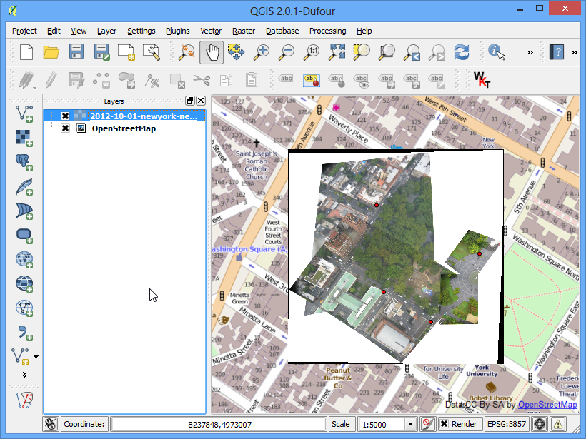

Georeferențierea Imaginilor Aeriene
[ Download PDF A4
Letter ]
In tutorialul Georeferențierea Foilor Topografice și a Hărților Scanate s-a acoperit procesul de bază al georeferențierii în QGIS. Această metodă implică citirea coordonatelor hărții scanate și introducerea lor manuală. De multe ori, coordonatele nu sunt imprimate pe hartă, sau în imaginea pe care încercați să o georeferențiați. În acest caz, puteți utiliza ca intrare o altă sursă de date georeferențiate. În acest tutorial, veți învăța cum să folosiți în procesul de georeferențiere sursele de date aflate în domeniul public.
Privire de ansamblu asupra activității
Vom georeferenția imagini de înaltă rezoluție, luate din balon, folosind coordonatele de referință din OpenStreetMap.
Alte competențe pe care le veți dobândi
Descărcarea imaginilor de foarte înaltă rezoluție, aflate în domeniul public.
Folosirea plugin-ului OpenLayers în QGIS.
Conversia coordonatelor între proiecții diferite, folosind instrumentul de tip linie de comandă cs2cs.
Folosirea unui strat existent, georeferențiat, introducând punctele GCP în unealta Georeferencer.
Stabilirea unor valori nule, personalizate, pentru un strat.
Obținerea datelor
În acest tutorial, vom folosi unele imagini superbe luate din balon și din zmeu, colectate de The Public Laboratory. Deși sunt disponibile și versiunile georeferențiate ale imaginilor, noi vom descărca o imagine JPG, ne-georeferențiată, pe care o vom supune procesului de georeferențiere, în QGIS. Dacă vă plac imaginile oferite, le puteți explora în Google Earth, la fel de bine.
Descărcați imaginea JPG a Washington Square Park, New York. Puteți face clic-dreapta pe butonul JPG și să alegeți Save link as....
Procedura
Pentru acest tutorial, vom folosi stratul OpenStreetMap ca strat de referință. Instalați plugin-ul OpenLayers din . Pentru mai multe informații despre utilizarea plugin-urilor în QGIS, puteți parcurge Utilizarea Plugin-urilor .

O dată instalat, mergeți la . Ca rezultat al acestei operațiune se va adăuga un strat cu dale pre-randate, create din Datele OpenStreetMap.

Acum aveți stratul OpenStreetMap încărcat în QGIS. Notați Sistemul de Coordonate de Referință (CRS) al acestui strat. Acesta este stabilit ca EPSG 3857 Pseudo Mercator. Acest lucru este important de reținut, deoarece coordonatele pe care le vom deduce din acest strat vor fi în acest CRS.

Sarcina curentă este de a localiza vecinătatea generală a zonei pe care încercăm să o georeferențiem. Se pot folosi doar instrumentele Mărire și Deplasare pentru a localiza zona în stratul OpenStreetMap. Dar profităm de această ocazie, pentru a prezenta un alt instrument care vă poate ajuta pe viitor. Știm că imaginea descărcată este pentru Washington Square Park din New York. Dacă veți căuta acel loc, localizați pagina lui de pe Wikipedia. Coordonatele parcului sunt indicate acolo.

În acest moment, coordonatele sunt exprimate în Grade/Minute/Secunde, reprezentând Latitudinea și Longitudinea. Dar, din moment ce stratul nostru este în proiecție Mercator, vom avea nevoie de coordonatele Mercator pentru a localiza parcul. Iată de ce un instrument din linia de comandă, denumit cs2cs, ne vine la îndemână. Dacă ați instalat QGIS cu ajutorul programului OSGeo4W, el se află deja pe sistemul dumneavoastră. Pe Linux și Mac, de asemenea, el vine pre-instalat, o dată cu aplicația QGIS. Lansați o fereastră terminal și tastați cs2cs pentru a verifica dacă acesta este disponibil. Utilizatorii de Windows pot găsi o fereastră terminal la .

După ce v-ați asigurat că instrumentul cs2cs există pe sistemul dvs., este timpul să convertim Latitudinea și Longitudinea în coordonate Mercator. Modul în care funcționează acest instrument presupune specificarea unor CRS-uri sursă și destinație. Definiția CRS constă într-un Șir PROJ4 sau un Cod EPSG. Din moment ce știm deja codul EPSG al CRS-urilor de intrare și de ieșire, vom folosi acest lucru. Cel mai simplu mod de utilizare a instrumentului, este de a furniza coordonatele de intrare chiar în linia de comandă. Rețineți că instrumentul acceptă coordonatele în ordinea X Y, așa că vom introduce Longitudine Latitudine. Introduceți următoarea comandă în terminal și apăsați Enter. Rețineți că e nevoie să prefixăm ghilimelele (‘), cu un backslash (\). După ce apăsați ENTER, instrumentul va procesa coordonatele și va afișa coordonatele X Y în CRS-ul EPSG:3857.
echo "-73d59'51\" 40d43'51\"" | cs2cs +init=EPSG:4326 +to +init=EPSG:3857
-8237364.02 4972720.34 0.00

Copiați aceste coordonate și mergeți la QGIS. În partea de jos a ferestrei QGIS, veți vedea o căsuță etichetată Coordonate. Introduceți coordonatele acolo, sub forma X, Y. Apăsați Enter. Veți vedea harta deplasată un pic, dar nu încercați să măriți. Pentru a vizualiza zona respectivă, selectați scara 1:2500 în caseta alăturată coordonatelor, apoi apăsați Enter.

Et Voilà! Se vede acum zona Washington Square Park pe suportul hărții dumneavoastră. Este timpul să începeți georeferențierea. Lansați Georeferențiator din . Dacă acel element de meniu nu există, atunci va trebui să activați plugin-ul Georeferencer GDAL din .

În fereastra Georeferencer, mergeți la . Navigați la fișierul JPG, anterior descărcat, și faceți clic pe Open.

În Coordinate Reference System Selector, alegeți EPSG:3857 Pseudo Mercator

Acum, faceți clic pe butonul Add Point din bara de instrumente și selectați o locație ușor identificabilă în imagine. Colțurile, intersecțiile, stâlpii etc. reprezintă bune puncte de control.

După ce faceți clic pe imagine, într-o locație a unui punct de control, va apărea un pop-up în care vor trebui introduse coordonatele hărții. Faceți clic pe butonul From map canvas.

Găsiți aceeași locație în stratul de referință, adică în stratul OpenStreetMap, și faceți clic pe suportul hărții. În acest mod, coordonatele se vor auto-popula. Faceți clic pe OK. În mod similar, alegeți cel puțin 4 puncte pe imagine, apoi adăugați coordonatele lor în stratul de referință.

Acum, mergeți la

Alegeți setările de mai jos. Asigurați-vă că ați bifat caseta Load in QGIS when done. Apăsați OK. Înapoi, în fereastra Georeferencer, mergeți la . Acest lucru va începe procesul de modificare a imaginii folosind GCP-urile, care se va încheia prin crearea rasterului țintă.

La încheierea procesului, stratul georeferențiat se va încărca în QGIS. Dacă totul a mers bine, îl veți vedea suprapus frumos peste stratul OpenStreetMap.

Pentru ca rezultatul să arate mai frumos, scoateți valorile no-data, albe și negre. Faceți clic dreapta pe stratul imagine și alegeți Properties.

Selectați fila Transparency. Vrem să indicăm faptul că pixelii negri sau albi din imagine reprezintă valori no-data și ar trebui să fie transparenți. Introduceți 0 pentru No data value. De asemenea, în Custom transparency options, apăsați butonul + și adăugați 255 pentru pixelii transparenți din fiecare bandă, apoi alegeți 100 pentru Percent transparent. Apăsați pe OK.

În acest moment, imaginea georeferențiată este suprapusă frumos peste stratul de bază.